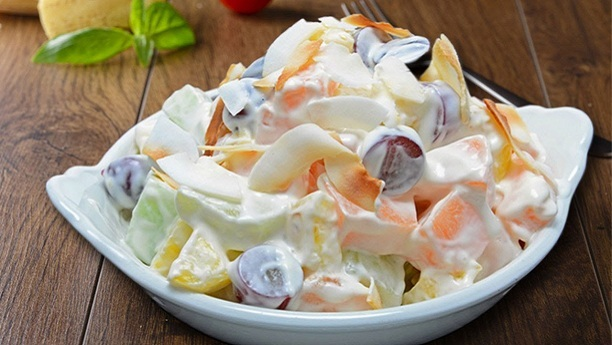

Russian Salad
Ingredients
Salad
1 pack Frozen Russian Salad Mix
1 large Apple
1/2 medium size Purple/Red Onion
3-4 medium size Pickles
1 cup Diced Ham Optional
4 Boiled Egg Optional
1/2 cup Diced Cheese Optional
Dressing
1 tbsp Mayo
1/2 tbsp Mustard
2 tbsp Sour cream
Salt and pepper to taste
Smoked paprika to taste Optional
1 pinch Sugar
Instructions
Boil water for the Frozen Russian Salad Mix, and cook it according to the package
While the vegetable mix is cooking, peel and dice the apple and the onion.
Slice the pickles
Add the diced apple, onion, ham, cheese, and the sliced pickles to a large mixing bowl
Strain the vegetable mix when it's cooked, then add it to the mixing bowl as well.
Mix the dressing in a smaller mixing bowl. (Add spices to taste
Pour the dressing onto the salad, then mix well
Put the salad in the fridge for 1-3 hours
Serve it cold